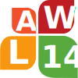

|  |
The 14th Linguistic Annotation Workshop |
We welcome submissions of long and short papers, posters, and demonstrations relating to the special theme or any aspect of linguistic annotation, including:
Submissions should report original and unpublished research on topics of interest to the workshop. Accepted papers are expected to be presented at the workshop and will be published in the workshop proceedings. They should emphasize obtained results rather than intended work, and should indicate clearly the state of completion of the reported results.
A paper accepted for presentation at the workshop must not be or have been presented at any other meeting with publicly available proceedings.
Submission is electronic, using the Softconf START conference management system. The submission site will be announced shortly.
Long/short paper submissions must use the official ACL 2019 style templates (see here. Long papers must not exceed eight (8) pages of content. Short papers and demonstration papers must not exceed four (4) pages of content. References do not count against these limits.
Note: The supplementary material does not count towards page limit and should not be included in paper, but should be submitted separately using the appropriate field on the submission website. All submissions must be in PDF format and must conform to the official style guidelines, which are contained in the template files that will become available on the conference website shortly.
Reviewing of papers will be double-blind. Therefore, the paper must not include the authors' names and affiliations or self-references that reveal the authors’ identity--e.g., "We previously showed (Smith, 1991) ..." should be replaced with citations such as "Smith (1991) previously showed ...". Papers that do not conform to these requirements will be rejected without review.
Authors of papers that have been or will be submitted to other meetings or publications must provide this information to the workshop co-chairs (law-xiv-2020-chairs@googlegroups.com). Authors of accepted papers must notify the program chairs within 10 days of acceptance if the paper is withdrawn for any reason.
If you have any questions, please feel free to contact the program co-chairs.